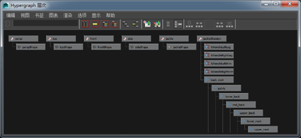

打开“Hypergraph”
- 在主菜单栏中：或。单击选项框
 可控制以下菜单项的行为：
可控制以下菜单项的行为：
- “创建新 Hypergraph 面板”(Create new Hypergraph panel)用于在场景中创建新视图。
- “使用第一个”(Use the first one)用于打开或重新打开场景中的第一个视图。
- 在面板菜单中：，然后从菜单顶部选择一个现有视图（例如，“Hypergraph 层级”(Hypergraph Hierarchy)），或者使用“新建场景层级”(New Scene Hierarchy)或“新建输入和输出连接”(New Input and Output Connections)创建新视图。
“Hypergraph”显示场景层级的图形视图或依存关系图，其中框表示节点，线表示关系。

图表区域将显示表示节点的框和连接这些框以表示关系的线的网络。您可以使用“Hypergraph”查看和编辑层级关系或依存关系（属性之间的输入和输出连接）。
“Hypergraph”可以用于查看和编辑层级关系（“大纲视图”(Outliner)显示的相同信息）或依存关系（属性之间的输入和输出连接）。
虽然初次看来“Hypergraph”似乎比“大纲视图”(Outliner)更令人生畏，但 Hypergraph 有几个优势：
- 它可以用于显示和编辑节点之间的连接。
- 移动图表的键与移动面板时使用的键相同（Alt + 鼠标中键和 Alt + 鼠标右键）。
- 可以为场景中的不同视图添加书签，也可以在视图之间进行缩放。
- “Hypergraph”会使用斜边绘制节点，使节点更易查看。